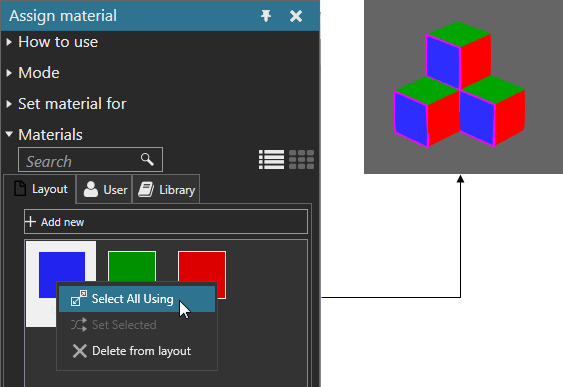

Selecting Materials
You can select a material being used by more than one object in the 3D world. This is similar to picking, but you are selecting the material of multiple objects.
- On the Modeling tab, in the Geometry group, click the Tools arrow, and then under Material, click Assign.
- In the Assign material task pane, expand Materials, and then right-click a material, and then click Select All Using. Objects with that material will be outlined in the 3D world, but understand you are selecting a material not an object.
Example. Select every blue material
